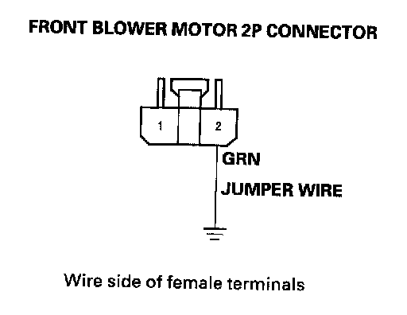
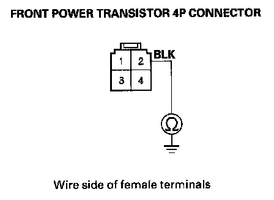
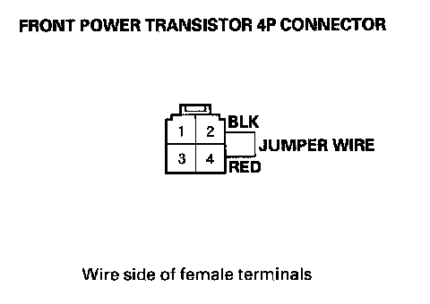
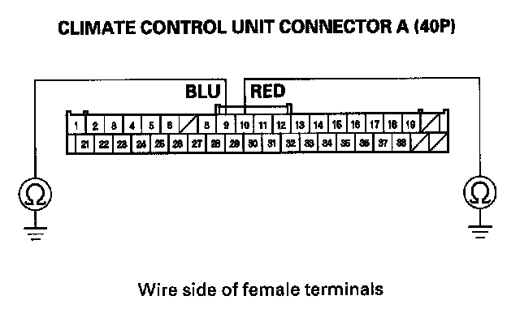
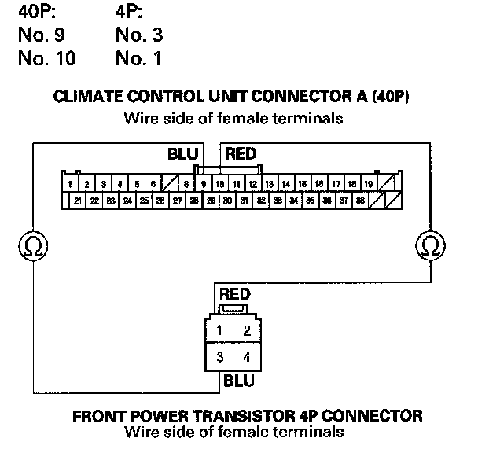
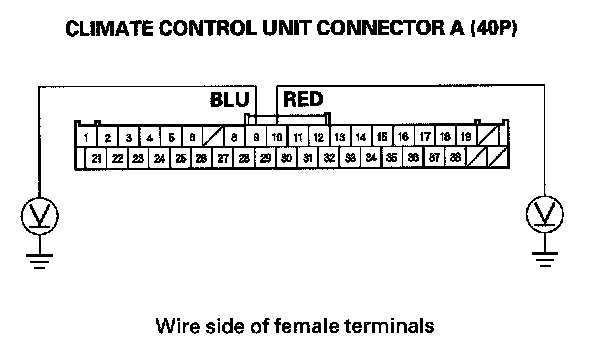
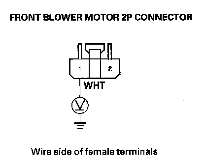
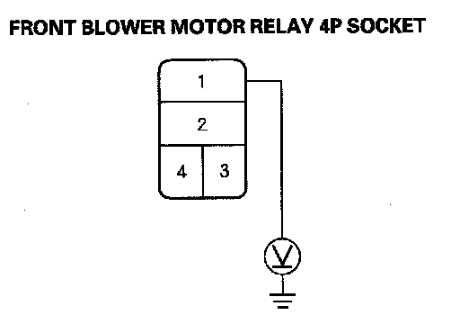
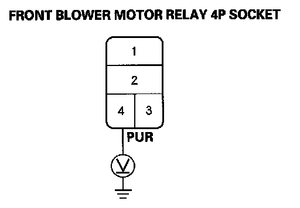
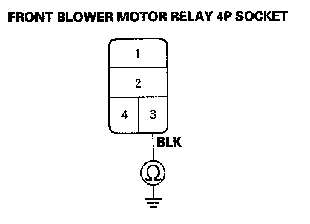

B1241
DTC B1241 or DTC indicator C: A Problem in the Front Blower Motor Circuit1. Clear the DTC with the HDS.
2. Turn the ignition switch OFF and then ON (II).
3. Do the self-diagnostic with the HDS or climate control unit.
4. Check for DTCs.
Is DTCB1241 or C indicated?
YES - Go to step 5.
NO - Intermittent failure, check for loose wires or poor connections on the front blower motor circuit.
5. Turn the ignition switch OFF.
6. Check the No. 12 (40 A) fuse in the relay block, and the No. 30 (10 A) fuse in the under-dash fuse/relay box.
Are the fuses OK?
YES - Go to step 7.
NO - Replace the fuse(s), and recheck. If fuse(s) blow again, check for a short in the No. 12 (40 A) and No. 30 (10 A) fuse(s) circuit.

7. Connect the front blower motor 2P connector terminal No. 2 to body ground with a jumper wire.
8. Turn the ignition switch ON (II).
Does the front blower motor run?
YES - Go to step 9.
NO - Go to step 24.
9. Turn the ignition switch OFF.
10. Disconnect the jumper wire.
11. Disconnect the front power transistor 4P connector.

12. Check for continuity between the front power transistor 4P connector terminal No. 2 and body ground.
Is there continuity?
YES - Go to step 13.
NO - Check for an open in the wire between the front power transistor and body ground. If the wire is OK, check for poor ground at G507.

13. Connect the front power transistor 4P connector terminals No. 2 and No. 4 with a jumper wire.
14. Turn the ignition switch ON (II).
Does the front blower motor run at high speed?
YES - Go to step 15.
NO - Repair open in the GRN wire between the front power transistor and the front blower motor.
15. Turn the ignition switch OFF.
16. Disconnect the jumper wire.
17. Disconnect climate control unit connector A (40P).

18. Check for continuity between body ground and climate control unit connector A (40P) terminals No. 9 and No. 10 individually.
Is there continuity?
YES - Repair short to body ground in the wire(s) between the climate control unit and the front power transistor.
NO - Go to step 19.

19. Check for continuity between the following terminals of climate control unit connector A (40P) and the front power transistor 4P connector.
Is there continuity?
YES - Go to step 20.
NO - Repair open in the wire(s) between the climate control unit and the front power transistor.
20. Turn the ignition switch ON (II).

21. Measure the voltage between body ground and climate control unit connector A (40P) terminals No. 9 and No. 10 individually.
Is there any voltage?
YES - Repair short to power in the wire(s).
NO - Go to step 22.
22. Reconnect climate control unit connector A (40P).
23. Test the front power transistor.
Is the front power transistor OK?
YES - Check for loose wires or poor connections at climate control unit connector A (40P) and at the front power transistor 4P connector. If the connections are good, substitute a known-good climate control unit, and recheck. If the symptom/indication goes away, replace the original climate control unit.
NO - Replace the front power transistor.
24. Disconnect the jumper wire.
25. Disconnect the front blower motor 2P connector.

26. Measure the voltage between the front blower motor 2P connector terminal No. 1 and body ground.
Is there battery voltage?
YES - Replace the front blower motor.
NO - Go to step 27.
27. Turn the ignition switch OFF.
28. Remove the front blower motor relay from the relay block, and test it.
Is the relay OK?
YES - Go to step 29.
NO - Replace the front blower motor relay.

29. Measure the voltage between the front blower motor relay 4P socket terminal No. 1 and body ground.
Is there battery voltage?
YES - Go to step 30.
NO - Replace the relay block.
30. Turn the ignition switch ON (II).

31. Measure the voltage between the front blower motor relay 4P socket terminal No. 4 and body ground.
Is there battery voltage?
YES - Go to step 32.
NO - Repair open in the wire between the No. 30 (10 A) fuse in the under-dash fuse/relay box and the front blower motor relay.
32. Turn the ignition switch OFF.

33. Check for continuity between the front blower motor relay 4P socket terminal No. 3 and body ground.
Is there continuity?
YES - Repair open in the WHT wire between the front blower motor relay and the blower motor.
NO - Check for an open in the wire between the front blower motor relay and body ground. If the wire is OK, check for poor ground at G202.